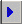
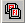

ACQ140
From ICISWiki
GRIMS main >
GRIMS functionality >
Seed Acquisition
Previous Next
Entering Passport Information
Overview
User interface form

Basic Information
| Field Name | Description |
| Batch ID | Identification code assigned to a batch. |
| Entry No | Entry number assigned to a sample. |
| Temp ID | Unique temporary identification number generated for every sample. |
| Collection No | Number or code assigned by the collecting team to the sample gathered. |
| Species Name | Specie name of the sample. |
| Variety Name | Local/vernacular name of the sample. |
| Origin | Country of origin of the sample. |
Collecting Team
| Field Name | Description |
| Source of Information | Refers to the person or publication where the passport information was obtained. |
| Collection No | Number or code assigned by the collecting team to the sample gathered. |
| Collection Date | Date sample was collected. |
| Mission Code | GRIMS assigned code to the mision |
| Start Date | Date the mission started. |
| End Date | Date the mission ended. |
| Funding Institute | Institutethat funded the collecting mission. |
| Cooperators | Names of the donor/ cooperators who participated in the collection of seed sample. |
Nomenclature
| Field Name | Description |
| Language of Variety Name | Language/dialect of the varietal name or vernacular name of wild species. |
| Meaning of Variety Name | Translation of the vernacular name into English. |
Location
| Field Name | Description |
| Latitude | Latitude is the angular distance north or south from the earth's equator. Format : degree.minute.second.direction |
| Longitude | Longitude is the arc of the earth's equator intersected between the meridian of a given place and the prime meridian. Format : degree.minute.second.direction |
| Altitude (m) | Elevation above sea level in meters. |
| Village | Village where sample was collected. |
| Town/city | Town or city where sample was collected. |
| District | District where sample was collected. |
| Province | Province where sample was collected. |
| Grower | Name of farmer or grower of the sample collected. |
| Source | Type of source location of the germplasm [i.e. farmland, threshing floor, farm store, market, institute, field border, wild] |
| Specify (if others) | Specify source not in the list. |
Characteristics of Material Collected
| Field Name | Description |
| Status of Sample | Type of germplasm collected [i.e. wild, weedy, primitive cultivar] |
| Type of Sample | Plant parts collected [i.e seeds, panicle, vegetative] |
| Herbarium Sample Presence | Indicates whether an herbarium sample was taken on the sample or not. |
| Specify (if others) | Mention other characteristics observed. |
| Varietal sample | Describes the composition of the variety collected [i.e. single variety, varietal mixture] |
| Sampling method | Indicates how the collected material were sampled [i.e. random, non-random] |
| Sample origin | Indicates whether a sample is indigenous or introduced to the area where it was collected [i.e. local, exotic]. |
| Variety group | Classification of accessions into variety groups is based mainly on the morphologic features of the adult plant, and to a certain extent, on grain appearance [i.e. indica, japonica, javanica, hybrids]. |
| Frequency | Frequency of occurrence of species/variety collected in an area [i.e. abundant, frequent, occasional, rare] |
| Specify (if others) | Mention other characteristics of the materials observed. |
Characteristics of Collecting Site
| Field Name | Description |
| Topography | Configuration of a surface including its relief and the position of its natural and man-made features [i.e. swamp, flood plain, plain level, undulating, hilly, mountainous] |
| Site | Topographical condition of a specific area where sample was collected [i.e. level, slope, summit, depression] |
| Soil texture | Relative proportions of sand, silt and clay in a sample [sand, loam, clay, silt, highly organic] |
| Drainage | Manner in which the waters pass off the surface of the land [i.e. poor, moderate, good, excessive] |
| Shading | Refers to the amount of exposure to the sun of the plant where sample was collected. Applicable for wild species [i.e. open, partial shade, complete shade]. |
| Specify (if others) | Mention other characteristics of the collecting site. |
Practices associated with materials

| Field Name | Description |
| Cultural type | Rice ecosystem. |
| Eco. system | Refers to the environment where the sample was collected [i.e. dryland hydromorphic, shallow flooded swamp, deep flooded swamp, floating rice, mangrove, irrigation] |
| Eco. zone | Refers to the edaphic-climatic condition of the area [i.e. forest, transition zone, derived savanna, guinea savanna, sudan savanna, sahel, montane]. |
| Shifting culture | Cultural practice [Y if yes and N otherwise]. |
| Terraced culture | Cultural practice [Y if yes and N otherwise]. |
| Direct seeding | Cultural practice [Y if yes and N otherwise]. |
| Double transplanting | Cultural practice [Y if yes and N otherwise]. |
| Mixed stand | Cultural practice [Y if yes and N otherwise]. |
| Sowing date | Date sample was sown. |
| Transplanting Date | Date sample was transplanted. |
| Harvest date | Date variety was harvested. |
| Maturity (days) | Maturity is estimated at 30 days after full heading. Observed in cultivated species. |
| Usage | Usage of variety collected. |
Population Characteristics
| Field Name | Description |
| Population size (m2) | Population size in square meters, estimated visually at collection site. |
| Water depth (m) | Approximate depth of water where sample was collected. |
| Distance to O. Sativa field | Distance of collection site of wild species to the nearest O. sativa field. |
| Degree of introgression | Spread of genes of one species into the gene complex of another. |
| Fertility | General seed set in a population per unit area. |
| Growth stage | Growth stage of plant sampled during collection time [i.e. vegetative, flowering, mature, seed shed]. |
| Degree of grazing | A disturbance factor which refers to the extent of grazed area observed at the collection site. |
| % Cover of wild rice | % coverage (area) of wild rice at collecting site, estimated to the nearest 5%. |
| Species diversity | Approximate number of species in the collection site. |
| Flowering compared to O. Sativa | Time of flowering of collected wild species sample compared to O. sativa. |
Plant Characteristics (p1)
| Field Name | Description |
| Length of Panicle (cm) | Length of panicles (n=5) is measured in cm from the base to the tip of the panicle. |
| Length of Awn (mm) | Awn is a bristle-like extension of varying lengths originating from the lemma of the grain. Length is measured in mm and done at anthesis (n=5). |
| Length of Anther (mm) | Anther is the sac of the stamen of the seed plants that contains the pollen. Length is measured in mm at anthesis (n=5). |
| Length of Grain (mm) | Grain length (n=10) is measured in mm as the distance from the base of the lowermost sterile lemma to the tip (apiculus) of the fertile lemma or palea, which ever is longer. |
| Width of Grain (mm) | Grain width is measured (n=10) in mm as the distance across the fertile lemma and the palea at the widest point. |
| Thickness of Grain (mm) | Grain thickness is the lateral diameter (mm) measured from 10 grains as the largest distance between the two lateral sides in the middle part of the caryopsis. |
Plant Characteristics (p2)
| Field Name | Description |
| Lemma and palea color | Lemma is the five-nerved and outer bract of the floret. Palea is the three-nerved bract of the floret which fits the lemma. Color is examined at anthesis. |
| Seed Coat Color | Seed coat color is the color of dehulled grains. Examined at post-harvest. |
| Photoperiod sensitivity | Photoperiod is the relative lengths of alternating periods of lightness and darkness as they affect the growth and maturity of an organism. |
| Breeding System | Method of reproduction [i.e. inbreeding, outcrossing, vegetative, unsure, mixture] |
| Population composition | The degree of homogeneity or heterogeneity of the sample. |
| Floating | Water-borne. |
| Tillering from nodes | Tiller count is recorded as the total number of grain-bearing and non-bearing tillers per hill. |
| Panicle type | Panicles are classified according to their mode of branching, angle of primary branches and spikelet density. |
| Seed production | Low or High seed production. |
| Awn strength | Awn is a bristle-like extension of varying lengths wild originating from the lemma of the grain [i.e. soft, hard, intermediate]. |
Remarks
| Field Name | Description |
| Grain Characteristics | Grain characteristics as observed by the collector. |
| Plant Characteristics | Plant characteristics as observed by the collector. |
| Pests/diseases | Resistance to pests/diseases. |
| Other Observation | Other observations on the sample collected. |
| Special Types | Special characteristics of the sample collected. |
Interactive user interface elements
| icon | action |
|---|---|
| | Query record |
| | Clear function |
| Save function | |
| Previous record | |
|  | Next record |
| | Help function |
|  | Hot keys display |
| | Close form |
| Look up table |
Use Case Definition
| Use Case Name | 1.4.0 Enter Passport Information | ||||||
|---|---|---|---|---|---|---|---|
| Use Case Definition | The use case allows data entry of passport information. Data are stored both in a serialized format( ICIS Germplasm attributes) and in parallel format (normal table with descriptors as column name). | ||||||
| User Contacts | |||||||
| Actors | Genebank Technician (GBT) | ||||||
| Location | GRC Data Management | ||||||
| Priority | 1 | ||||||
| Typical Course of Events |
| ||||||
| Assumption/s | The seed list has been inputed to the system | ||||||
| Pre-condition/s | |||||||
| Post-condition/s | Passport data is stored | ||||||
| Primary Pathway/s | Enter passport data | ||||||
| Alternative Pathway/s | Enter passport data through ICIS SetGen | ||||||
| Exception Pathway/s |